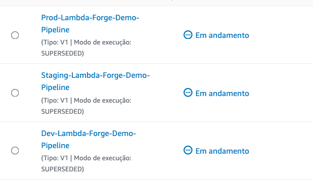
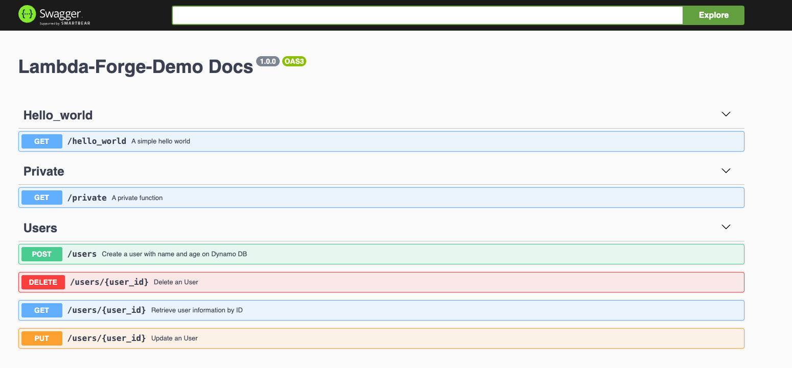

Building A Serverless CRUD Application With Dynamo DB
The primary goal of this tutorial is not to craft an elaborate application; instead, it focuses on showcasing the seamless integration of AWS resources within the Lambda Forge architecture. To highlight this, we will develop a straightforward CRUD application designed to capture and manage user-defined names and ages, each uniquely identified by a UUID. This approach not only simplifies the demonstration of the architecture's capabilities but also emphasizes the practical application of these technologies in a user-centric scenario.
Configuring DynamoDB Tables for Each Deployment Stage
To ensure our application can operate smoothly across different environments, we'll create three separate DynamoDB tables on AWS DynamoDB console, each tailored for a distinct deployment stage:
- Dev-Users
- Staging-Users
- Prod-Users
Throughout this guide, we'll utilize PK as the Partition Key for our tables, optimizing data organization and access.
Having acquired the ARNs for each stage-specific table, our next step involves integrating these ARNs into the cdk.json file. This crucial configuration enables our Cloud Development Kit (CDK) setup to correctly reference the DynamoDB tables according to the deployment stage.
Here's how to update your cdk.json file to include the DynamoDB table ARNs for development, staging, and production environments:
| cdk.json | |
|---|---|
Incorporating DynamoDB Into Our Service Layer
The subsequent phase in enhancing our application involves integrating the DynamoDB service within our service layer, enabling direct communication with DynamoDB tables. To accomplish this, utilize the following command:
forge service dynamo_db
This command crafts a new service file named dynamo_db.py within the infra/services directory.
Below is the updated structure of our Service class, now including the DynamoDB service, demonstrating the integration's completion:
from infra.services.dynamo_db import DynamoDB
from infra.services.api_gateway import APIGateway
from infra.services.aws_lambda import AWSLambda
class Services:
def __init__(self, scope, context) -> None:
self.api_gateway = APIGateway(scope, context)
self.aws_lambda = AWSLambda(scope, context)
self.dynamo_db = DynamoDB(scope, context.resources)
Here is the newly established DynamoDB class:
from aws_cdk import aws_dynamodb as dynamo_db
from aws_cdk import aws_iam as iam
class DynamoDB:
def __init__(self, scope, resources: dict) -> None:
self.dynamo = dynamo_db.Table.from_table_arn(
scope,
"Dynamo",
resources["arns"]["dynamo_arn"],
)
@staticmethod
def add_query_permission(function, table):
function.add_to_role_policy(
iam.PolicyStatement(
actions=["dynamodb:Query"],
resources=[f"{table.table_arn}/index/*"],
)
)
In DynamoDB development, querying data is a fundamental operation. Notably, the DynamoDB class is equipped with a helper method designed to simplify the process of granting query permissions. Furthermore, we should refine the class variables to directly reference our Users table.
| infra/services/dynamo_db.py | |
|---|---|
Ensure that the resource ARN precisely matches the name specified in your cdk.json file.
Building the Create Feature
Next, we'll focus on constructing the "Create" functionality of our CRUD application. This feature is dedicated to inputting names and their corresponding ages into our DynamoDB tables. To initiate the creation of a Lambda function tailored for this operation, run the following command in the Forge CLI:
forge function create_user --method "POST" --description "Create a user with name and age on Dynamo DB" --belongs users --public
This command signals to Forge the need to generate a new Lambda function named create_user, which will handle POST requests. By applying the --belongs flag, we guide Forge to organize this function within the users directory, emphasizing its role as part of a suite of user-related functionalities.
functions/users
├── create_user
│ ├── __init__.py
│ ├── config.py
│ ├── integration.py
│ ├── main.py
│ └── unit.py
└── utils
└── __init__.py
users/This directory acts as the container for all Lambda functions related to users operations, organizing them under a common theme.create_user/This subdirectory is dedicated to the function for creating users, equipped with all necessary files for its execution, configuration, and testing.utils/A utility directory for shared functions or helpers that support the operations within the users functions, enhancing code reuse and maintainability.
Core Logic
The Create User endpoint serves as the gateway for adding new users to our system. It processes incoming data from the request body, assigns a unique UUID to each user, and then stores this information in DynamoDB. Now, let's delve into the details of the function implementation.
import json
import uuid
from dataclasses import dataclass
import os
import boto3
@dataclass
class Input:
name: str
age: int
@dataclass
class Output:
id: str
def lambda_handler(event, context):
# Retrieve the DynamoDB table name from environment variables.
USERS_TABLE = os.environ.get("USERS_TABLE")
# Initialize a DynamoDB resource.
dynamodb = boto3.resource("dynamodb")
# Reference the DynamoDB table.
users_table = dynamodb.Table(USERS_TABLE)
# Parse the request body to get user data.
body = json.loads(event["body"])
# Generate a unique ID for the new user.
user_id = str(uuid.uuid4())
# Insert the new user into the DynamoDB table.
users_table.put_item(Item={"PK": user_id, "name": body["name"], "age": body["age"]})
# Return a successful response with the newly created user ID.
return {"statusCode": 200, "body": json.dumps({"user_id": user_id})}
Configuration Class
Let's develop a configuration class to streamline the lambda function's access to necessary resources. This class will centralize the management of environment variables and resource configurations, thereby enhancing code maintainability and readability. It ensures that all external resources such as DynamoDB tables are easily configurable and securely accessed within the lambda function.
from infra.services import Services
class CreateUserConfig:
def __init__(self, services: Services) -> None:
function = services.aws_lambda.create_function(
name="CreateUser",
path="./functions/users",
description="Create a user with name and age on Dynamo DB",
directory="create_user",
environment={
"USERS_TABLE_NAME": services.dynamo_db.users_table.table_name,
},
)
services.api_gateway.create_endpoint("POST", "/users", function, public=True)
services.dynamo_db.users_table.grant_write_data(function)
Unit Tests
Integrating AWS resources directly into our Lambda function introduces complexities when it comes to testing. Utilizing actual AWS services for unit testing is not optimal due to several reasons: it can incur unnecessary costs, lead to potential side effects on production data, and slow down testing due to reliance on internet connectivity and service response times. To address these challenges and ensure our tests are both efficient and isolated from real-world side effects, we'll simulate AWS resources using mock implementations. This approach allows us to control both the input and output, creating a more predictable and controlled testing environment.
To facilitate this, we'll employ the moto library, which is specifically designed for mocking AWS services. This enables us to replicate AWS service responses without the need to interact with the actual services themselves.
To get started with moto, install it using the following command:
Given that pytest is our chosen testing framework, it's worth highlighting how it utilizes fixtures to execute specific code segments before or after each test. Fixtures are a significant feature of pytest, enabling the setup and teardown of test environments or mock objects. This capability is particularly beneficial for our purposes, as it allows us to mock AWS resources effectively. By default, pytest automatically detects and loads fixtures defined in a file named conftest.py.
Positioning our conftest.py file within the functions/users directory ensures that all unit tests within this scope can automatically access the defined fixtures. This strategic placement under the users folder allows every test in the directory to utilize the mocked AWS resources without additional configuration, streamlining the testing process for all tests related to the users functionality.
Here's how the structure with the conftest.py file looks:
functions/users
├── conftest.py
├── create_user
│ ├── __init__.py
│ ├── config.py
│ ├── integration.py
│ ├── main.py
│ └── unit.py
└── utils
└── __init__.py
Below is the content of our fixture specifically designed to mock DynamoDB interactions.
import json
import os
import moto
import boto3
import pytest
# Defines a pytest fixture with name users_table.
@pytest.fixture
def users_table():
# Set an environment variable to use a fake table name within tests.
os.environ["USERS_TABLE_NAME"] = "FAKE-USERS-TABLE"
# The `moto.mock_dynamodb` context manager simulates DynamoDB for the duration of the test.
with moto.mock_dynamodb():
db = boto3.client("dynamodb")
db.create_table(
AttributeDefinitions=[
{"AttributeName": "PK", "AttributeType": "S"},
],
TableName="FAKE-USERS-TABLE",
KeySchema=[
{"AttributeName": "PK", "KeyType": "HASH"},
],
BillingMode="PAY_PER_REQUEST",
)
table = boto3.resource("dynamodb").Table("FAKE-USERS-TABLE")
# `yield` returns the table resource to the test function, ensuring cleanup after tests.
yield table
Having established this fixture, it is now readily available for use in our unit tests. Next, we will utilize this fixture to conduct tests on our create function, aiming to confirm its behavior under simulated conditions.
import json
from .main import lambda_handler
# Test the create user function leveraging the users_table fixture from the conftest.py file automatically imported by pytest.
def test_lambda_handler(users_table):
# Simulate an event with a request body, mimicking a POST request payload containing a user's name and age.
event = {"body": json.dumps({"name": "John Doe", "age": 30})}
# Invoke the `lambda_handler` function with the simulated event and `None` for the context.
response = lambda_handler(event, None)
# Parse the JSON response body to work with the data as a Python dictionary.
response = json.loads(response["body"])
# Retrieve the user item from the mocked DynamoDB table using the ID returned in the response.
# This action simulates the retrieval operation that would occur in a live DynamoDB instance.
user = users_table.get_item(Key={"PK": response["user_id"]})["Item"]
# Assert that the name and age in the DynamoDB item match the input values.
# These assertions confirm that the `lambda_handler` function correctly processes the input
# and stores the expected data in the DynamoDB table.
assert user["name"] == "John Doe"
assert user["age"] == 30
By running the command pytest functions/users -k unit, we initiate the execution of only the unit tests located within the functions/users directory.
============================ test session starts ==============================
platform darwin -- Python 3.10.4, pytest-8.1.1, pluggy-1.4.0
configfile: pytest.ini
collected 2 items / 1 deselected / 1 selected
functions/users/create_user/unit.py . [100%]
=========================== 1 passed, 1 deselected in 2.45s ===================
As evidenced, our unit test has successfully passed.
Integration Tests
Unlike unit tests, which are isolated and focused on individual components, integration tests play a critical role in our testing strategy by utilizing actual resources. This approach allows us to verify the effective interaction between various parts of our application, particularly the endpoints and the resources they rely on. Integration testing uncovers issues that may not be apparent during unit testing, such as:
- Incorrect or insufficient permissions that prevent functions from accessing databases
- Configuration errors that could lead to service disruptions
- Network issues affecting the communication between services
- Potential security vulnerabilities in the integration points
Conducting a simple POST request and expecting a 200 response code is a basic, yet critical, integration test. It serves as a primary indicator of the endpoint's operability. In this tutorial, we'll focus solely on this basic test case to keep the content accessible and prevent information overload.
However, it's worth noting that integration testing can encompass a wide array of scenarios, such as verifying the successful insertion of data into a DynamoDB table using Boto3, among others.
import pytest
import requests
from lambda_forge.constants import BASE_URL
@pytest.mark.integration(method="POST", endpoint="/users")
def test_create_user_status_code_is_200():
response = requests.post(url=f"{BASE_URL}/users", json={"name": "John Doe", "age": 30})
assert response.status_code == 200
The advantage of employing a multi-stage environment is especially pronounced in the context of integration testing. Since our base url is pointing to the staging environment, we ensure that our testing activities do not adversely affect the production environment.
Disclaimer
To maintain our focus on illustrating the setup and interactions with AWS resources and the Lambda Forge architecture, we will intentionally skip detailed coverage of subsequent unit and integration tests.
This approach is also informed by the fact that these tests will not significantly differ from those we've outlined for the create user endpoint. Including them would introduce redundancy and potentially overwhelm the reader with excessive detail. Our primary goal is to ensure clarity and conciseness while providing a comprehensive understanding of the key concepts.
However, rest assured that all the code developed in this tutorial, along with the tests, will be made available on GitHub for future reference and deeper exploration. This way, we aim to strike a balance between thoroughness and accessibility, ensuring that the tutorial remains engaging and informative without causing reader fatigue.
Building the Read Feature
We're now set to construct the read feature, enabling the retrieval of user details using their ID.
To facilitate this, we'll utilize the following command:
forge function get_user --method "GET" --description "Retrieve user information by ID" --belongs users --endpoint "/users/{user_id}" --public
The --endpoint "/users/{user_id}" parameter sets up a specific URL path for accessing this function. This path includes a dynamic segment {user_id} that gets replaced by the actual ID of the user we're trying to retrieve information about when the function is called.
By running this command, we add a new layer to our application that specifically handles fetching user details in an organized, accessible manner.
functions/users
├── conftest.py
├── create_user
│ ├── __init__.py
│ ├── config.py
│ ├── integration.py
│ ├── main.py
│ └── unit.py
├── get_user
│ ├── __init__.py
│ ├── config.py
│ ├── integration.py
│ ├── main.py
│ └── unit.py
└── utils
└── __init__.py
Core Logic
This segment of our application demonstrates the retrieval of user information from a DynamoDB table through an AWS Lambda function. It highlights how to parse API gateway events, interact with DynamoDB, and structure responses for efficient data delivery.
import json
import os
import boto3
from dataclasses import dataclass
@dataclass
class Path:
user_id: str
@dataclass
class Input:
pass
@dataclass
class Output:
name: str
age: int
def lambda_handler(event, context):
# Retrieve the name of the DynamoDB table from environment variables.
USERS_TABLE_NAME = os.environ.get("USERS_TABLE_NAME")
# Initialize a DynamoDB resource using boto3.
dynamodb = boto3.resource("dynamodb")
# Reference the specific DynamoDB table by name.
users_table = dynamodb.Table(USERS_TABLE_NAME)
# Extract the user ID from the pathParameters provided in the event object.
user_id = event["pathParameters"].get("user_id")
# Retrieve the user item from the DynamoDB table using the extracted ID.
user = users_table.get_item(Key={"PK": user_id}).get("Item")
# Reformat the user item into the desired output structure.
user = {"name": user["name"], "age": user["age"]}
# Return the user data with a 200 status code, ensuring the body is properly JSON-encoded.
return {"statusCode": 200, "body": json.dumps(user, default=str)}
Configuration Class
The config class below outlines the configuration necessary for establishing the GetUser function within AWS, illustrating the seamless integration of AWS Lambda and API Gateway to expose a user data retrieval endpoint.
from infra.services import Services
class GetUserConfig:
def __init__(self, services: Services) -> None:
function = services.aws_lambda.create_function(
name="GetUser",
path="./functions/users",
description="Retrieve user information by ID",
directory="get_user",
environment={
"USERS_TABLE_NAME": services.dynamo_db.users_table.table_name,
},
)
services.api_gateway.create_endpoint(
"GET", "/users/{user_id}", function, public=True
)
services.dynamo_db.users_table.grant_read_data(function)
Building the Update Feature
Let's utilize Forge once again to swiftly establish a tailored structure, setting the stage for our Update User functionality.
forge function update_user --method "PUT" --description "Update an user by ID" --belongs users --endpoint "/users/{user_id}" --public
As expected, after using the forge command to generate the update_user function, a predefined directory structure is created.
functions/users
├── conftest.py
├── create_user
│ ├── __init__.py
│ ├── config.py
│ ├── integration.py
│ ├── main.py
│ └── unit.py
├── get_user
│ ├── __init__.py
│ ├── config.py
│ ├── integration.py
│ ├── main.py
│ └── unit.py
├── update_user
│ ├── __init__.py
│ ├── config.py
│ ├── integration.py
│ ├── main.py
│ └── unit.py
└── utils
└── __init__.py
Core Logic
Below is the implementation for updating a user, allowing changes to either the name or age.
import json
from dataclasses import dataclass
import os
import boto3
@dataclass
class Path:
user_id: str
@dataclass
class Input:
name: str
age: int
@dataclass
class Output:
message: str
def lambda_handler(event, context):
# Retrieve the DynamoDB table name from environment variables set in the Lambda configuration
USERS_TABLE_NAME = os.environ.get("USERS_TABLE_NAME")
# Initialize a DynamoDB resource using boto3, AWS's SDK for Python
dynamodb = boto3.resource("dynamodb")
# Reference the DynamoDB table using the retrieved table name
users_table = dynamodb.Table(USERS_TABLE_NAME)
# Extract the user ID from the pathParameters of the event object passed to the Lambda
user_id = event["pathParameters"].get("user_id")
# Parse the JSON body from the event object to get the user data
body = json.loads(event["body"])
# Update the specified user item in the DynamoDB table with the provided name and age
users_table.put_item(Item={"PK": user_id, "name": body["name"], "age": body["age"]})
# Return a response indicating successful user update, with a 200 HTTP status code
return {
"statusCode": 200,
"body": json.dumps({"message": "User updated"}, default=str),
}
Configuration Class
Here's the configuration needed for the update user function to properly engage with the essential AWS services.
from infra.services import Services
class UpdateUserConfig:
def __init__(self, services: Services) -> None:
function = services.aws_lambda.create_function(
name="UpdateUser",
path="./functions/users",
description="Update an User",
directory="update_user",
environment={
"USERS_TABLE_NAME": services.dynamo_db.users_table.table_name,
},
)
services.api_gateway.create_endpoint(
"PUT", "/users/{user_id}", function, public=True
)
services.dynamo_db.users_table.grant_write_data(function)
Building the Delete Feature
Now, to complete our CRUD application, let's proceed with constructing the Delete User endpoint.
forge function delete_user --method "DELETE" --description "Delete an user by ID" --belongs users --endpoint "/users/{user_id}" --public
Upon executing the Forge command, the delete_user folder will appear within the infra/users directory.
functions/users
├── conftest.py
├── create_user
│ ├── __init__.py
│ ├── config.py
│ ├── integration.py
│ ├── main.py
│ └── unit.py
├── delete_user
│ ├── __init__.py
│ ├── config.py
│ ├── integration.py
│ ├── main.py
│ └── unit.py
├── get_user
│ ├── __init__.py
│ ├── config.py
│ ├── integration.py
│ ├── main.py
│ └── unit.py
├── update_user
│ ├── __init__.py
│ ├── config.py
│ ├── integration.py
│ ├── main.py
│ └── unit.py
└── utils
└── __init__.py
Core Logic
Below is the streamlined code for removing a user from DynamoDB using their user ID.
import json
from dataclasses import dataclass
import os
import boto3
@dataclass
class Path:
user_id: str
@dataclass
class Input:
pass
@dataclass
class Output:
message: str
def lambda_handler(event, context):
# Fetch the name of the DynamoDB table from the environment variables.
USERS_TABLE_NAME = os.environ.get("USERS_TABLE_NAME")
# Initialize a DynamoDB resource using the boto3 library.
dynamodb = boto3.resource("dynamodb")
# Reference the DynamoDB table by its name.
users_table = dynamodb.Table(USERS_TABLE_NAME)
# Extract the user ID from the path parameters in the event object.
user_id = event["pathParameters"].get("user_id")
# Delete the item with the specified user ID from the DynamoDB table.
users_table.delete_item(Key={"PK": user_id})
# Return a response indicating that the user has been successfully deleted, with a 200 HTTP status code.
return {"statusCode": 200, "body": json.dumps({"message": "User deleted"})}
Configuration Class
Here's how to set up the delete user function for interaction with the required AWS resources.
from infra.services import Services
class DeleteUserConfig:
def __init__(self, services: Services) -> None:
function = services.aws_lambda.create_function(
name="DeleteUser",
path="./functions/users",
description="Delete an User",
directory="delete_user",
environment={
"USERS_TABLE_NAME": services.dynamo_db.users_table.table_name,
},
)
services.api_gateway.create_endpoint(
"DELETE", "/users/{user_id}", function, public=True
)
services.dynamo_db.users_table.grant_write_data(function)
Deploying Our Serverless CRUD Application
Fantastic, with our four fundamental operations in place, we're ready for deployment to AWS.
As a quick refresher, deploying a Lambda Function requires initializing the config class within the LambdaStack class's constructor. Fortunately, Forge automates this process for us. Now, let's examine how our LambdaStack has evolved after our extensive interactions with Forge.
from aws_cdk import Stack
from constructs import Construct
from infra.services import Services
from lambda_forge import release
from functions.users.delete_user.config import DeleteUserConfig
from functions.users.update_user.config import UpdateUserConfig
from functions.users.get_user.config import GetUserConfig
from functions.users.create_user.config import CreateUserConfig
from functions.private.config import PrivateConfig
from authorizers.default.config import DefaultAuthorizerConfig
from authorizers.docs.config import DocsAuthorizerConfig
from functions.hello_world.config import HelloWorldConfig
@release
class LambdaStack(Stack):
def __init__(self, scope: Construct, context, **kwargs) -> None:
super().__init__(scope, f"{context.name}-Lambda-Stack", **kwargs)
self.services = Services(self, context)
# Authorizers
DefaultAuthorizerConfig(self.services)
DocsAuthorizerConfig(self.services)
# HelloWorld
HelloWorldConfig(self.services)
# Private
PrivateConfig(self.services)
# Users
DeleteUserConfig(self.services)
UpdateUserConfig(self.services)
GetUserConfig(self.services)
CreateUserConfig(self.services)
Impressively, Forge has neatly arranged all related Config classes for optimal cohesion.
As observed, all four operations have been successfully initialized in our lambda stack, enabling us to move forward by pushing our code to GitHub and awaiting the completion of the CI/CD process. Following this, we should have a fully functional and operational CRUD application at our disposal.
# Send your changes to stage
git add .
# Commit with a descriptive message
git commit -m "Developing a CRUD with DynamoDB"
# Push changes to the 'dev' branch
git push origin dev
# Merge 'dev' into 'staging' and push
git checkout staging
git merge dev
git push origin staging
# Finally, merge 'staging' into 'main' and push
git checkout main
git merge staging
git push origin main

In this tutorial, the generated base URLs for each environment are:
- Dev:
https://gxjca0e395.execute-api.us-east-2.amazonaws.com/dev - Staging:
https://8kwcovaj0f.execute-api.us-east-2.amazonaws.com/staging - Prod:
https://s6zqhu2pg1.execute-api.us-east-2.amazonaws.com/prod
For simplicity, we'll focus on demonstrating the processes in the production stage. However, these operations can be similarly conducted using the base URLs for other environments.
curl --request POST \
--url https://s6zqhu2pg1.execute-api.us-east-2.amazonaws.com/prod/users \
--data '{
"name": "John Doe",
"age": 30
}'
curl --request GET \
--url https://s6zqhu2pg1.execute-api.us-east-2.amazonaws.com/prod/users/$USER-ID
curl --request PUT \
--url https://s6zqhu2pg1.execute-api.us-east-2.amazonaws.com/prod/users/$USER-ID \
--data '{
"name": "John Doe",
"age": 31
}'
curl --request DELETE \
--url https://s6zqhu2pg1.execute-api.us-east-2.amazonaws.com/prod/users/$USER-ID
Remember, all of our developments up to this point have been automatically documented using Swagger. You can access this comprehensive documentation at https://s6zqhu2pg1.execute-api.us-east-2.amazonaws.com/prod/docs.

Congratulations! 🎉 You've successfully deployed your very first Serverless application using DynamoDB and Lambda Forge across three different stages! 🚀👩💻